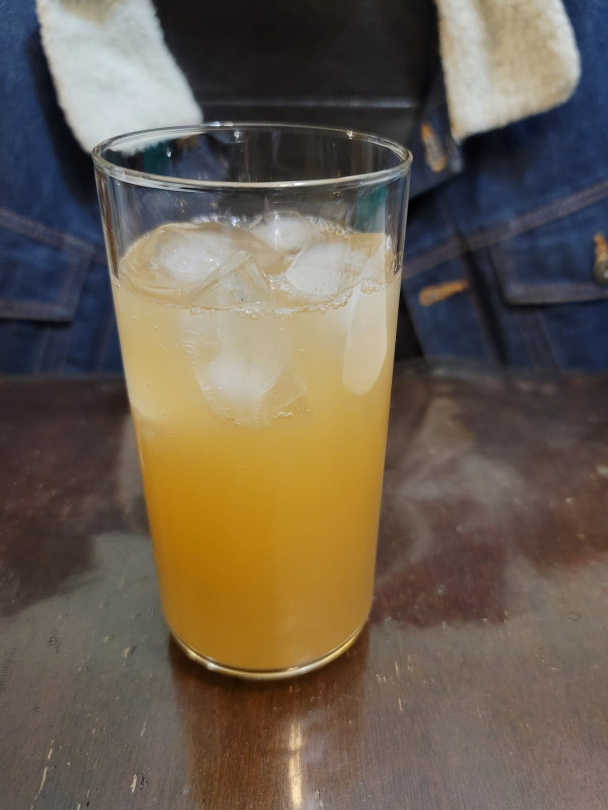

Holiday Sweet Potato Fly

Ingredients:
- 10 oz Sweet potato, peeled and grated, about 1/2 Sweet potato
- 1 cup Sugar
- 1/2 tsp Ground cinnamon
- 1/4 tsp Ground nutmeg
- 1/8 tsp Ground cloves
- 4 cups Water, nonchlorinated
Instructions:
- Rinse the sweet potato several times until the water runs clear and there is little to no starch.
- Combine all the ingredients into a half-gallon jar and stir until the sugar is completely dissolved. Cover with a loosely fitted lid and let ferment for about 2 days at room temperature, stirring occasionally to ensure the sweet potato stays under the liquid.
- When the taste is approaching your liking, strain the liquid into 16 oz flip-top bottles. Let carbonate to preference, about 1-3 days, before refrigerating. Serve cold.